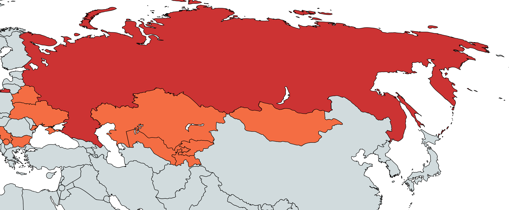

ようこそ。このページではキリル文字を学んでいきましょう
Аа Бб Гг Дд Еe Ёё Жж Зз И и Йй Кк Лл Мм Хх Оо Пп Рр Сс Тт Уу Фф Хх Цц Чч Шш Щщ Ыы Ээ Юю Яя ъ ь
マトリョーシカのイラスト:いらすとや
キリル文字はスラブ語派を表記するための表音文字です。
ロシア語以外のスラブ語属、モンゴル語、中央アジア諸語などでも使用されています
ロシア語学習の第一歩として、キリル文字の形と発音を覚えましょう

キリル文字の使用地域。キリル文字を覚えると、
これらの国の言葉も読めるようになるかもしれませんよ